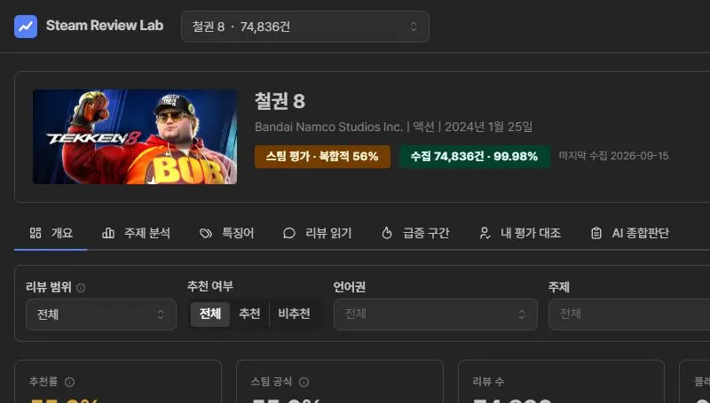
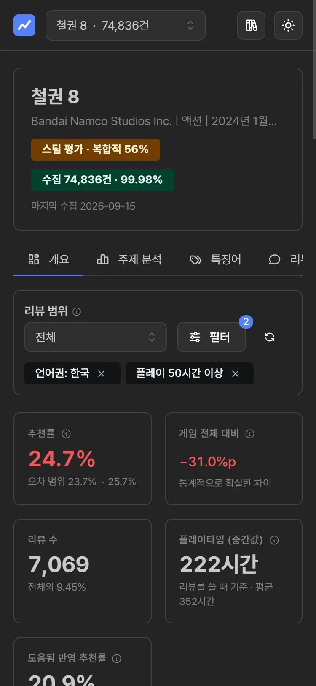

평점 하나보다,
누가 무엇을 불편해했는지 봅니다
Steam Review Lab은 이용자 리뷰를 모으고, 언어, 플레이 시간, 주제별 차이를 살펴보는 개인 분석 도구입니다.

AI가 제 해석까지 대신하지 않도록,
분석에 넣는 자료부터 나눴습니다
10월 7일, 최종 피드백은 직접 쓰겠다고 범위를 정했습니다. 10월 22일 목적에 맞게 구현됐는지 다시 점검하도록 했고, AI가 개인 평가까지 입력에 섞여 있던 문제를 찾아 수정했습니다.
“너는 스팀 리뷰 분석을 하고 나는 주관 분석을 하고 그래서 그 두개를 합쳐서 피드백을 내가 내는거지.”2026.10.07, 본인 원문 발췌
그 기준이 현재 코드에도 남아 있는지
AI에 전달하는 리뷰 묶음에는 개인 평가를 넣지 않습니다. 저장 화면에도 ‘AI 종합판단에는 들어가지 않습니다’라고 알립니다. 목적과 역할 구분은 제가 정했고, 구현 점검과 코드 수정은 AI가 했습니다.
요구 원문과 현재 코드 발췌 읽기 →이 사례는 도구의 위임 범위를 정하고 바로잡은 경험입니다. 본인이 완성한 게임 분석 보고서의 사례는 아닙니다.
기능별 담당 범위와 해석 기준
내 경험과 시장 반응을 비교하되, 마지막 해석은 직접 합니다
게임 분석 모임에서 사용할 목적과 사람, AI의 역할을 정했습니다. AI가 개인 평가까지 받아 최종 회고를 대신 쓰는 기능은 제외했습니다.
수집, 저장, 통계, 번역과 화면 구현
AI가 리뷰 수집기와 데이터베이스, 필터, 통계 계산, 번역과 화면을 구현했습니다. 분석에 사용한 입력과 판단 기록을 함께 남기는 구조입니다.
통계는 더 읽을 리뷰를 좁혀 줍니다
어떤 주제의 부정률이 높다는 것만으로 원인을 확정하지 않습니다. 표본과 조건을 보고 원문으로 돌아가 해석하도록 설계했습니다.
필터를 적용한 실제 화면과 원래 목적

“시장의 재미와 나의 재미의 주파수 맞추기”
이용자 반응을 AI가 분석하고, 직접 플레이한 경험은 제가 분석한 뒤 둘을 대조하려는 목적입니다. 완성된 개인 회고 사례를 보여 주는 단계는 앞으로 채울 부분입니다.
설계 변화와 저장 자료 더 보기 →대화가 바뀌어도,
왜 그렇게 정했는지 이어갑니다
이어담은 선택한 Claude, Codex 대화의 원문과 판단 기록을 다시 찾아 쓰는 로컬 보관 도구입니다.
“대화가 길어지다보면 기존에 대화했던 내역이 전부 유실되버리더라구 … 모든 대화내용을 다 남기고 싶거든”2026.10.22, 처음 필요를 설명한 본인 대화에서 발췌
- 보존할 대화 선택기본은 꺼짐, 선택한 세션만 보관합니다.
- 지난 주제 검색어느 도구에서 한 대화인지 함께 찾습니다.
- 원문과 문맥 확인요약을 넘어 당시 말과 판단 이유로 돌아갑니다.
- 현재 결정과 대조제안, 채택, 번복을 섞지 않고 작업을 잇습니다.
본인과 AI가 나눈 일
저는 대화가 길어지며 판단 이유가 사라지는 문제를 제기하고, 보존 범위와 사용 흐름을 정했습니다. 저장, 검색, 도구 연결 코드는 AI가 구현했습니다.
원문을 보존한 사실과, 그 원문을 올바르게 해석해 현재 작업에 적용한 것은 구분합니다. 오래된 발언을 새 지시로 취급하지 않는 것이 사용 기준입니다.
도구 설계와 변화 더 보기 →‘좋은 소리’ 대신,
어떤 행동을 알려 줄지 적었습니다
미지의 경매장에서 사운드 명세와 선별, 장면 배치를 맡았습니다. 음원 후보 찾기와 효과음 편집, 음량 측정은 AI 도구에 맡겼습니다.

최종 v3.6.1(2026.08.04) 효과음 원본. OpenGameArt CC0 묶음을 AI 도구로 편집한 결과입니다.
장면별 기준을 적고, 처리된 소리를 직접 들은 뒤 수정 방향을 정했습니다. 팀원의 “낙찰과 패스가 같은 소리로 들린다”는 피드백은 두 행동의 재질을 나누는 수정으로 이어졌습니다.
명세와 수정 전, 후 소리 비교 →